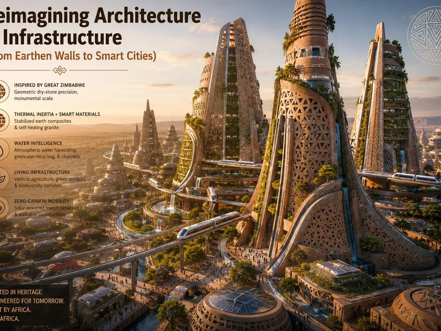

Rethinking Africa. Reclaiming Intelligence. Reimagining the Future.
A research-driven media platform exploring African development, knowledge, governance, culture and possibility from an African-centred perspective.

The 90-Second Africa Lens Quiz
Seven questions. Find your African future-builder profile.
Watch and listen
Africa is not empty of intelligence
Its challenge is that much of its intelligence has not been sufficiently recognised, refined, institutionalised, financed and transformed into collective power. This platform moves beyond describing Africa's problems: it asks how they were produced, what sustains them, what knowledge has been neglected, and what practical alternatives can be built. Read more about the vision.
What was interrupted can be restored. What was deferred can be recovered.
This is not the past. This is interrupted science.
The clay pot is not a symbol of poverty; it is an off-grid thermodynamic device, refined through generations of empirical experimentation. Using AI speculative imaging, we project what African sciences should look like today, had their development never been violently interrupted.
 How the world sees it
How the world sees it
 What it actually is
What it actually is
"Subsistence craft": the colonial framing of African knowledge.
Thermodynamics, computation, engineering: scientific archives awaiting restoration.
The story we are rethinking



Six major themes
Education & Knowledge
How education shapes African identity, ambition, work and possibility.
Governance & Institutions
How African states can build credible, accountable and culturally grounded systems.
Indigenous Knowledge & Innovation
How inherited knowledge can become contemporary science, enterprise and industry.
Work, Production & Excellence
Why Africa imports expertise and how local capability can be strengthened.
Culture, Identity & African Agency
How language, media, religion and global power shape African self-perception.
African Futures
How Africans can design cities, institutions, technologies and economies rooted in their realities.
The written work
Articles, research summaries, reading lists and downloadable briefs sit alongside the episodes. This is what separates the platform from commentary: every claim can be traced to a source.
What knowledge did your parents possess that your generation failed to inherit?
Africa's future cannot be imagined by one voice
Bring your research, experience, question or story into the conversation.
Propose an episode or article
A story, an observation or your own research: bring it to the table.
Share your ideaRecommend a voice
Know a scholar, artisan, elder or innovator Africa should hear?
Recommend someoneInvite or collaborate
Invite Dr Damola to speak, volunteer, or partner on research.
Get in touchMeet Dr Damola

Dr Damola is a development economist, Afrocentric scholar, AI generalist, public policy strategist and gospel music artist with over 25 years of experience across government, academia and international consultancy. Through Rethinking Africa she brings scholarship out of restricted academic spaces and into public conversation.
For scholars, students, policymakers, professionals, creators, community leaders, members of the diaspora, and everyone committed to Africa's intellectual and developmental renewal.
Join the Founding 1,000
Be among the first thousand members of a movement to recover African intelligence and agency. Discover African-centred perspectives grounded in research, watch conversations with scholars and practitioners, and receive new episodes, articles and event invitations, beginning with the free 7 Days of Rethinking series.
Welcome to the Founding 1,000.
Check your inbox: Day 1 of 7 Days of Rethinking is on its way.
Help this initiative grow
Rethinking Africa with Dr. Damola is an independent initiative. Your support funds research, production, translation and the documentation of African knowledge, and it keeps this platform free for students and communities across the continent.